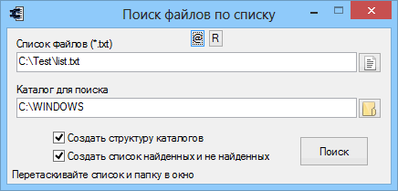

Search_files_list
Назначение
Поиск файлов по списку. Удобен если надо вытащить из системы например драйвер. Имея список файлов драйвера можно вытащить несколько десятков файлов за один клик, сохраняя структуру каталогов, а потом их скопировать в LiveCD и тем самым импортировать драйвер в ОС, а потом выбрать его для применения.

Список может состоять только из файлов, либо полных и относительных путей к файлу (путь игнорируется при поиске).
В любом случае результатом является папка с найденными файлами. Если указать "Создать структуру каталогов", то учитываются пути и результат содержит структуру, как в списке поиска (не как в каталоге поиска), например "Search_results\D\my_folder\my_file". Если указать "Создать список найденных и не найденных", то получим ещё и списки файлов с путями откуда были взяты найденные файлы. Если файлов с одинаковыми именами в каталоге поиска окажется более одного, то утилита копирует только первый найденный файл. Если список содержит два одинаковых имени файлов, то результат всё равно будет содержать одну копию файла, а списки содержать все варианты путей.
! Формат выходных данных изменился: список реальных путей содержит путь начиная от указанного каталога поиска, а не от корня диска.